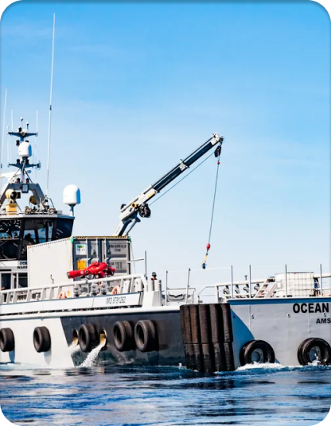

Conservação Marinha

Os conservacionistas marinhos confiam em uma combinação de princípios científicos derivados da biologia marinha, oceanografia e ciência da pesca. Os oceanos desempenham um papel crucial na regulação do clima, fornecem alimentos e recursos para bilhões de pessoas, e sustentam uma rica diversidade de vida. No entanto, os ecossistemas marinhos enfrentam ameaças crescentes devido às atividades humanas, como poluição, sobrepesca e mudanças climáticas. A conservação marinha busca mitigar esses impactos e promover a saúde dos oceanos.